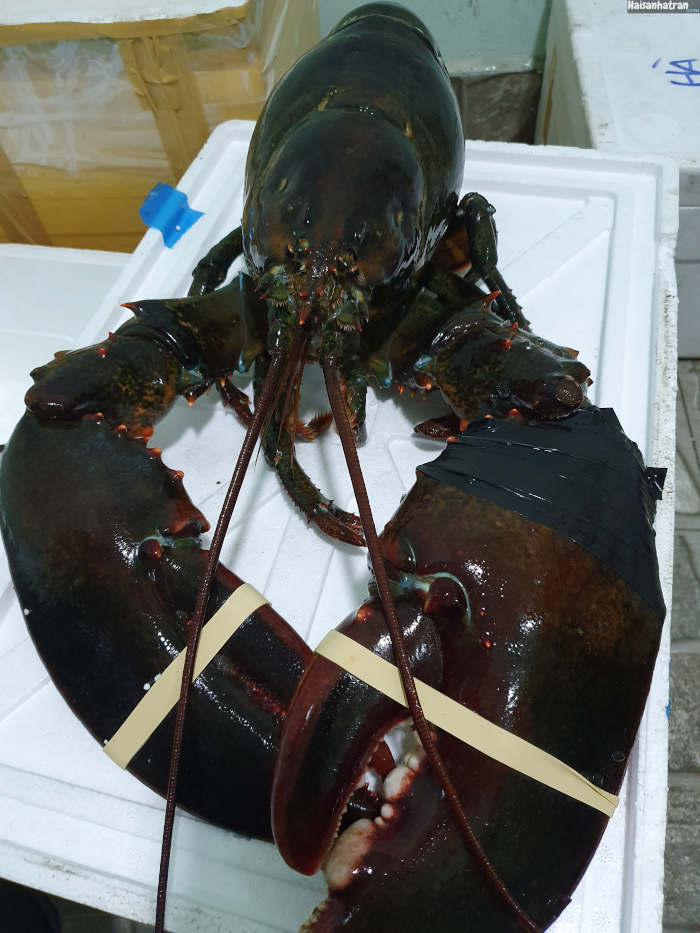

Top 5 hải sản nhập khẩu
II. Tôm Hùm Alaska
Tôm hùm Alaska là một trong những loại hải sản có giá thành cao nhất nhì thị trường hải sản hiện nay.
Tôm Alaska có kích thước khá lớn với hai chiếc càng to khỏe, thân dài và đuôi chắc khỏe, sống ở các khe đá hoặc trú trong các rặng san
hô dưới đáy biển.
Giá trị dinh dưỡng và tác dụng của Tôm hùm Alaska:
- Theo Hiệp hội tim mạch Mỹ thì trong hải sản (tôm, cá…) chứa nhiều acid béo omega-3. Dưỡng chất này rất có lợi cho tim mạch vì thế Hiệp hội Tim mạch khuyến cáo mỗi người nên ăn hải sản ít nhất 2 lần/tuần.
- Không chỉ omega-3, hải sản còn là một nguồn cung cấp protein tuyệt vời đồng thời lượng chất béo trong hải sản không cao như các sản phẩm thịt gia súc, gia cầm khác.
- Theo các chuyên gia dinh dưỡng, tôm hùm là nguồn protein nạc rất có lợi cho sức khỏe. Trong 100 gram thịt tôm hùm có đến 98 đơn vị calo, 21gram protein và chỉ 0,6 gram chất béo.

Giá của tôm hùm Alaska:
- Tôm hùm Alaska sống có giá dao động 1.000.000 đồng/kg
- Bảo quản lạnh sẽ có giá dao động 700.000 đồng/kg